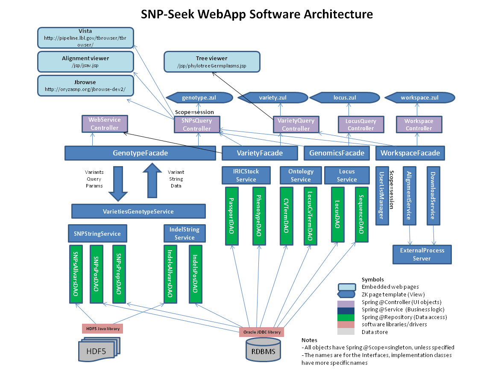
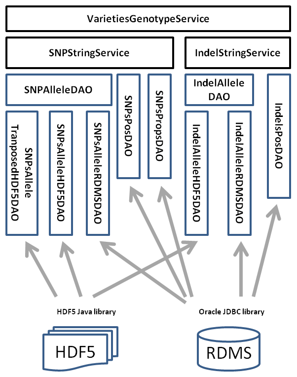
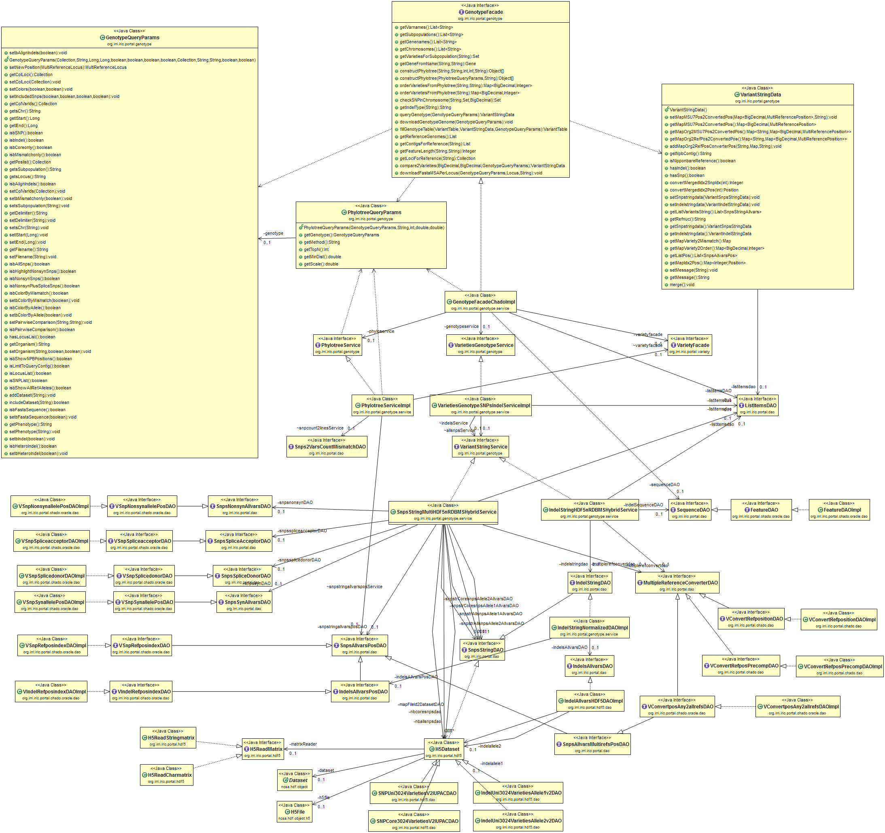
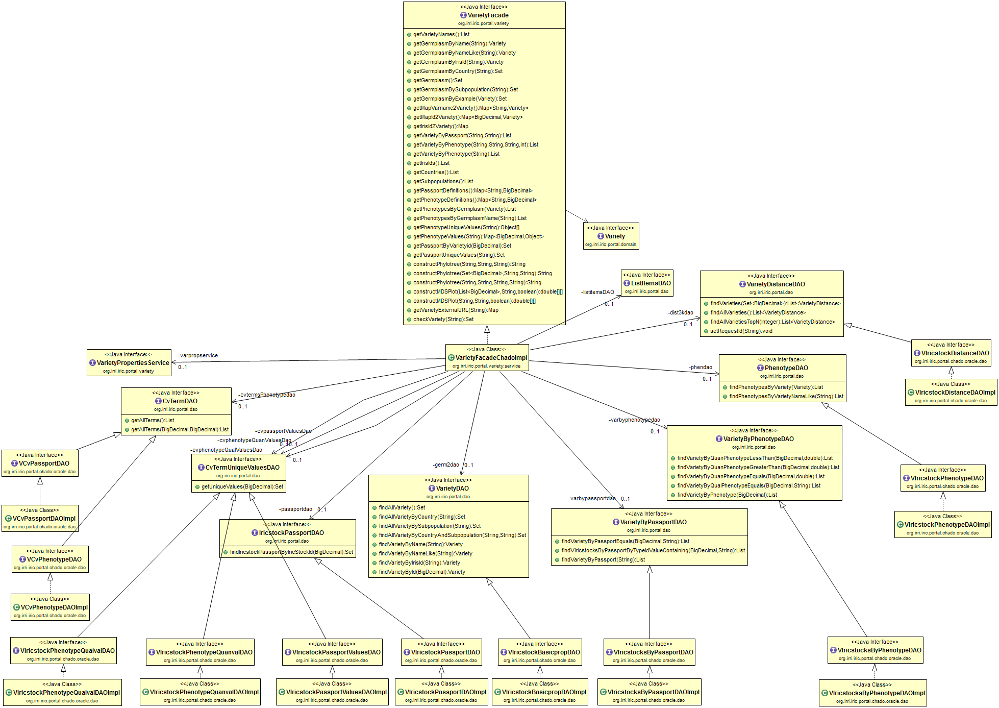
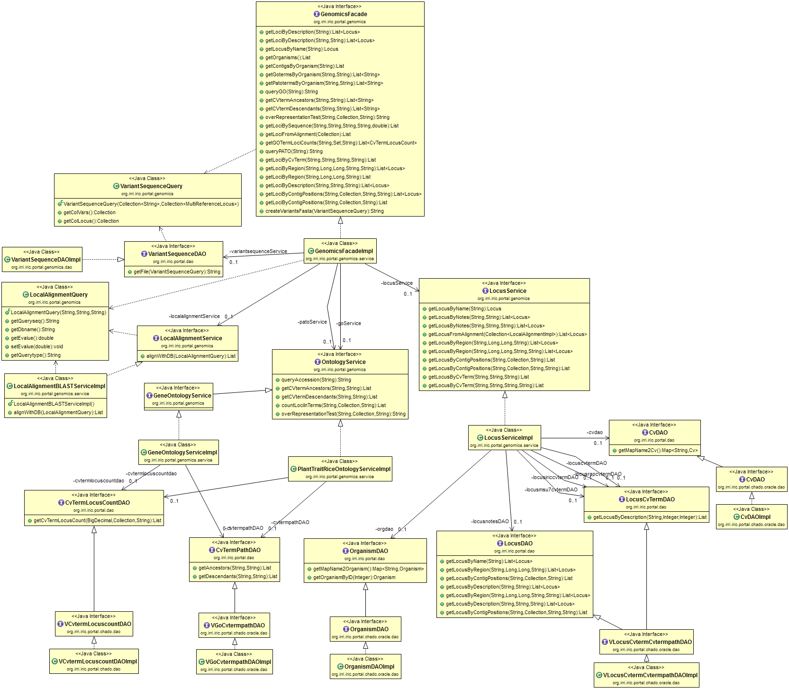
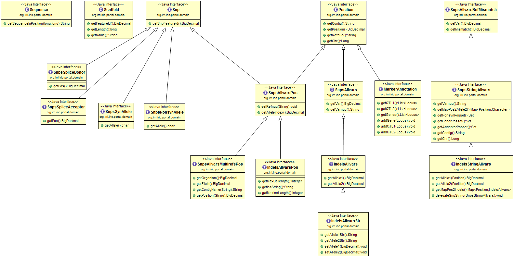
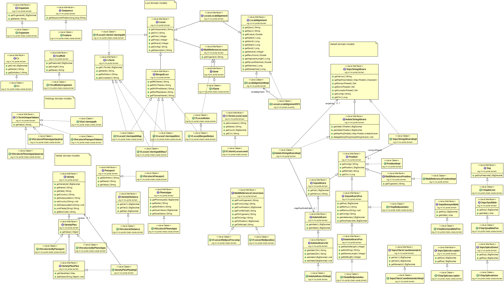
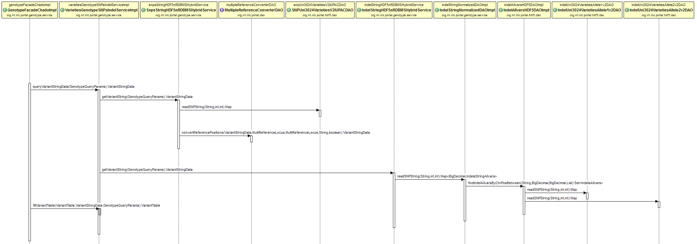

This is the README of the SNP-Seek Web interface source code repository site in http://bitbucket.org/irridev/iric_portal. The application is written in Java, using Hibernate for ORM, Spring-MVC framework, and ZK for the viewers. There are separate repositories for the backend Oracle and data generation pipeline scripts.
Setup development environment
Set the parameters defined in the static class org.irri.iric.portal.AppContext, specially:
webserver The target webserver. enum WEBSERVER { LOCALHOST, AWS, AWSDEV, VMIRRI, POLLUX, ASTI }
Unless you are within IRRI network, just set this to the default LOCALHOST.
compiletype Compilation type. enum COMPILETYPE { PROD, DEV, TEST }
getFlatfilesDir() Directory of SNP-Seek data files in the server (using server file system)
getHostname() Web server hostname or IP address
getTempDir() Directory to write temp files accessible to the internet, but using the server file system (ex. /path/to/tomcat/webapps/temp)
getJbrowseDir() JBrowse folder name as deployed in web server (ex. jbrowse)
These configurations are currently hard-coded, but will be made configurable through XML later.
Compile the application and export into a war file. (ex. iric-portal.war)
Download and install the HDF5 library from https://www.hdfgroup.org/HDF5/release/obtain5.html (also available here) in the web server. Add the HDF5 library installation directory to Tomcat. In /path/to/tomcat/bin/setenv.sh add the line
export JAVA_OPTS="-Djava.library.path=/path/to/hdf5/lib"
Within Eclipse, set it in Run>Run configuration>Server>Tomcat, select Arguments tab, VM arguments textbox
Deploy the generated war in Tomcat
Dependencies
Aside from the downloads described above, all required jar files are included in the project in /WebRoot/WEB-INF/lib
Database configuration
To connect to the database, edit the username, password and url for the Data Source Setup in the file /resources/iric_prod_crud-dao-context.xml. Please contact us for these values, with your development machine IP address.
<class="org.apache.commons.dbcp.BasicDataSource" destroy-method="close" name="IRIC_ProductionDS">
<property name="driverClassName" value="oracle.jdbc.driver.OracleDriver"/>
<property name="username" value="*"/>
<property name="password" value="*"/>
<property name="url" value="jdbc:oracle:thin:@*"/>
<property name="maxIdle" value="16"/>
<property name="maxActive" value="32"/>
</bean>
The project files are organized in these folders and packages. Javadoc documentation is also available in http://snp-seek.irri.org/snpseek-javadoc/
/src/applicationContext-business.xml
The configuration files defined in /resources are imported in sequence as defined in this file. When a new package is created, it should be registered in this file and in this order:
Domains, DAOs, Service, Web or WS or ZK Controllers
to makes sure that the Spring dependency injection works without NULL reference assignments
/resources
configuration files.
iric_prod_crud-dao-context.xml
iric_prod_crud-security-context.xml
iric_prod_crud-service-context.xml
iric_prod_crud-web-context.xml
/WebRoot
Root directory of the web application, as viewed in the browser. We are using ZK for the viewers and the webpages are defined in *zul files, instead of html. The most important files are:
genotype.zul SNP query page
variety.zul Variety query page
locus.zul Gene loci query page
download.zul Download page
myworkspace.zul My List page
gwas.zul GWAS analysis page
home.zul Front page
The web layout is defined by these files
index.zul Landing/default page
template.zul Page layout
banner.zul Banner and menu page
footer.zul Footer page
_* files starting with _ are the corresponding decorators to apply the template to the pages
README.md this file
The Java source codes are organized into these major packages
org.irri.iric.portal global configurations, utility functions
org.irri.iric.portal.domain domain objects interface, used by all services
org.irri.iric.portal.dao data access object interface, used by all services
org.irri.iric.portal.genotype SNPs and Indels queries
org.irri.iric.portal.variety variety phenotype and passport data queries
org.irri.iric.portal.genomics gene loci, gene ontology queries
org.irri.iric.portal.gwas GWAS analysis modules
org.irri.iric.portal.chado.oracle DAO and Domain implementation for data stored in Oracle using Chado schema
org.irri.iric.portal.hdf5 DAO and Domain implementation for data stored in HDF5 format
org.irri.iric.portal.ws web services
org.irri.iric.portal.admin manages workspace, users
The web application follows the Model-View-Controller (MVC) architecture. There are currently four major functionalities of the application: genotype query, variety query, gene loci query and user workspace management, which is organized in:
org.irri.iric.portal.genotype
org.irri.iric.portal.variety
org.irri.iric.portal.genomics
org.irri.iric.portal.admin
Within these packages are .service and .zkui subpakages. Each service has a facade interface, which serves as an entry point for the domain. To make the user interfaces, web interfaces and WS-API independent of the actual data sources, the viewers, controllers or web services should use only these Facade interfaces:
org.irri.iric.portal.genotype.service.GenotypeFacade
org.irri.iric.portal.variety.service.VarietyFacade
org.irri.iric.portal.genomics.service.GenomicsFacade
org.irri.iric.portal.admin.WorkspaceFacade
Each method of these facade call other Service objects, which implements the query logic. The service objects then use DAO or data access object interfaces to query the database.
Our web interface use the ZK framework http://www.zkoss.org/. The view controllers are in the org.irri.iric.portal.*.zkui packages which include the ZK view controller and supporting classes for the components (buttons, listboxes, tables, checkboxes, etc.) in the user interface. The interface termplate itself is defined in the *.zul files in /WebRoot
The web services API are implemented using Spring REST Controller to map URL paths to service and facade methods. There are currently three major web services:
org.irri.iric.portal.ws.rest.GenotypeWS For methods in *GenotypeFacade
org.irri.iric.portal.ws.rest.VarietyWS For methods in *VarietyFacade
org.irri.iric.portal.ws.rest.BlastWS For methods in *LocalAlignmentService
To hide or add more attributes, or change data types to the response objects, WS-specific entities are implemented to wrap the DAO-generated entities. These web service response objects are defined in org.irri.iric.portal.ws.entity
The WADL file http://snp-seek.irri.org/ws/application.wadl which can be used to generate client objects, is generated automatically by Spring from the defined mappings. This file is also used to generate the API documentation. The file /WebRoot/api-docs/application-api-docs.json is such documentation in Swagger-json format, can be viewed by swagger-ui in http://snp-seek.irri.org/swagger-ui/index.html
Every data store should implement the Domain and DAO interfaces for each data it can provide. These are the currently implemented data stores:
org.irri.iric.portal.chado.* To access Oracle with Chado schema
org.irri.iric.portal.hdf5.* To read HDF5 genotype files
org.irri.iric.portal.flatfile.* To read ASCII genotype files
Within these packages are subpackages:
*dao where the actual data retrieval is implemented, like SQL query or file reading
*domain holds the entity attribute values
These are classes that are frequently used by all the modules.
org.irri.iric.portal.AppContext This class provides application-wide access to the Spring ApplicationContext.
It is used to define global application parameters. These parameters are currently hard-coded,
but has the capability to be overriden with *.xml defined values.
org.irri.iric.portal.dao.ListItemsDAO, org.irri.iric.portal.dao.ListItemsDAOImpl
Iterface and an implementation to cache list of objects frequently used by the user-interface.
The values are loaded from the database on first used, and then stored in a Map for fast access on next use.
This diagram summarizes the different software layers and modules for the web-application.

The updated genotype module to incorporate INDEL data and HDRA as data storage.

The relationships between the components for each modules are illustrated in the following UML diagrams.
Genotype Module 
Variety Module 
Genomics Module 
Genotype Domain Models

All Domain Models 
Genotype Query Sequence

JBrowse is a browser-based genome browser implemented in javascript. We added some scripts for the Genotype track to display variants for all varieties within a region. The JBrowse script with the added codes and SNP-seek data are in here.
Vista is a comparative genomics tool with its own viewer. We used Vista to compare the 5 reference genomes, and the results made viewable within SNP-Seek.
Some pages are generated using Java Server Pages (JSP) and embedded as IFrame to the ZK pages. The reason is that these pages extensively use javascript libraries that may conflict with ZK, which itself is in javascript. These include:
To develop a new module, we created a set of files to start with as templates.
Copy these files then rename to the module name.
blank_module.zul
_blank_module.zul
The blank_module page uses the BlankModuleFacade defined in the org.irri.iric.portal.blank_module package. Copy then modify these into a new package using your module name.
The source code is stored in BitBucket using git version control. This section is a short introduction on how to clone and contribute to the code. For users unfamiliar with git, please check this tutorial.
You can use Sourcetree, GitBash, or any client you like to clone your Git repository. These instructions show you how to clone your repository with GitBash.
Paste the command you copied from Bitbucket, for example:
$git clone git@bitbucket.org/irridev/iric_portal.git
If you were successful, a new sub-directory appears on your local drive. This directory has the same name as the Bitbucket repository that you cloned. The clone contains the files and metadata that Git requires to maintain the changes you make to the source files.
On your local system, make sure you have a local repository cloned from the remote repository. Then, do the following:
Change to the root of the local repository.
cd mytestproject
List all your branches
git branch -a
You should see something similar to the following:
* master
remotes/origin/HEAD -> origin/master
remotes/origin/feature
remotes/origin/master
Notice that it lists both the branches that are local and the remote branches on Bitbucket. Using the list as reference, choose the branch you want to checkout. In this example, the feature branch is the branch.
Checkout the branch you want to use.
git checkout feature
Confirm you are now working on that branch:
git branch
You should see something similar to the following:
git branch
* feature
master
Going forward, all your Git commands apply to the branch. When you push the changes to your remote Bitbucket repository, those changes apply to the repository's branch.
Git Commit Example – Updating ALL files in the local repository
git add . at the command line prompt in your local project directory, to stage files for commit.git commit –m “Commit message here.” to update the files in your local repositoryGit push example – Updating files in the server
git push at the command line prompt in your local project directory, to copy your files from your local repository to Bitbucket.Example:
$ git push
Password:
Counting objects: 6, done.
Delta compression using up to 4 threads.
Compressing objects: 100% (3/3), done.
Writing objects: 100% (4/4), 23.98 KiB, done.
Total 4 (delta 0), reused 0 (delta 0)
remote: bb/acl: alui is allowed. accepted payload.
To https://alui@staging.bitbucket.org/alui/alui-git-fork.git
0ad86b3..395d3c2 master -> master
Open your Bitbucket repository in your browser. The Overview tab shows your most recent commits in the activity stream.
As this is better explained here, please see this page
This is quite complex to discuss in a single paragraph, please refer to this link.
Using this workflow won’t really give much benefit for a single-developer project. But the more developers we add, the higher the need for organizing our workflow. So in case we get 2 or more people working on the source code, please follow the Gitflow workflow.
For comments and suggestions, please email us at iric@irri.org